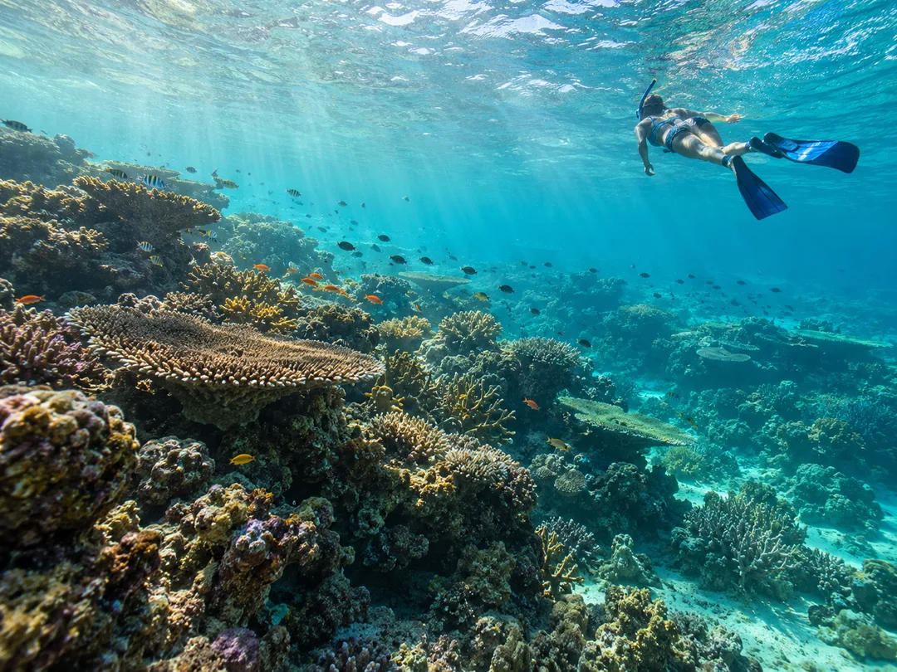

$20Snorkeling Trip Chole Bay
Explorez les récifs de la baie de Chole.
Découvrir cette excursionDécouvrez les fonds marins de la baie de Chole lors d'une sortie de snorkeling guidée parmi certains des récifs coralliens les plus fascinants de l'île de Mafia. Explorez trois sites différents, chacun offrant ses formations coralliennes, ses poissons tropicaux colorés et une grande diversité de vie marine. L'excursion est organisée en fonction des marées pour profiter de bonnes conditions de visibilité et de snorkeling. Entre les arrêts, détendez-vous à bord avec des fruits frais, de l'eau et des en-cas tout en admirant la baie.
Un programme suggéré en mer
Rendez-vous au Swahili Local Restaurant
Rencontrez vos guides, recevez votre équipement et vérifiez qu'il est confortable. Vous pouvez aussi utiliser le vôtre.
Embarquement et présentation
Rejoignez la plage, montez à bord et rencontrez le capitaine et les guides locaux.
Premier arrêt snorkeling
Commencez à explorer un site de la baie de Chole, comme Big Rock, Small Rock ou Coral Garden, selon les conditions de mer.
Deuxième arrêt snorkeling
Rejoignez un autre récif en bateau et découvrez d'autres habitats marins et poissons tropicaux.
Troisième arrêt snorkeling
Profitez d'une dernière session et d'autres occasions d'observer la vie sous-marine.
Retour à la plage
Détendez-vous pendant le trajet en bateau vers le point de départ.
Confirmez l'équipement de snorkeling, les conditions de mer et les éventuels frais du parc.
Réserver Poursuivre la conversation sur WhatsApp